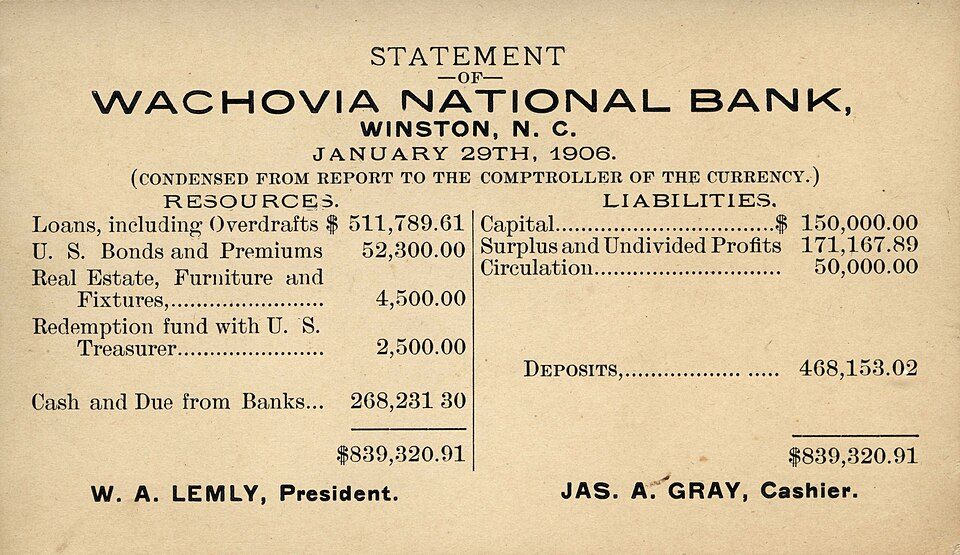
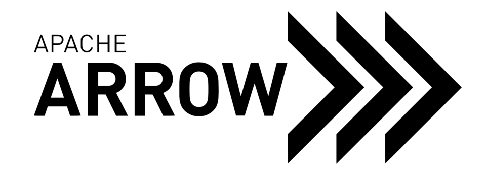
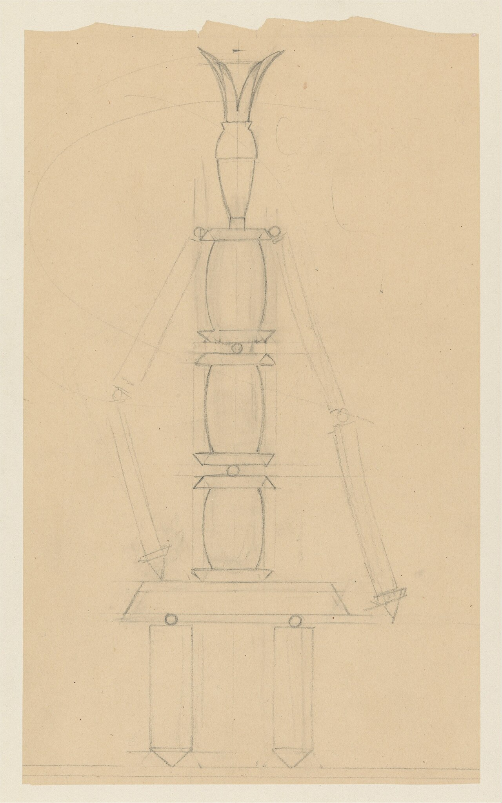
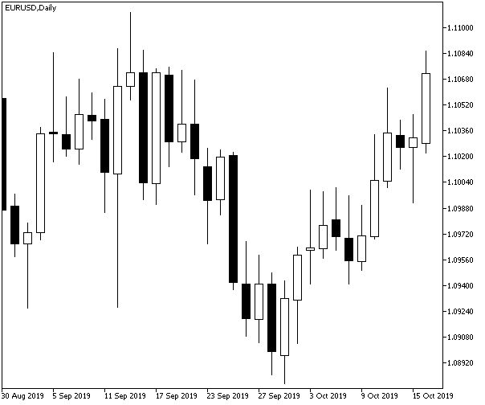
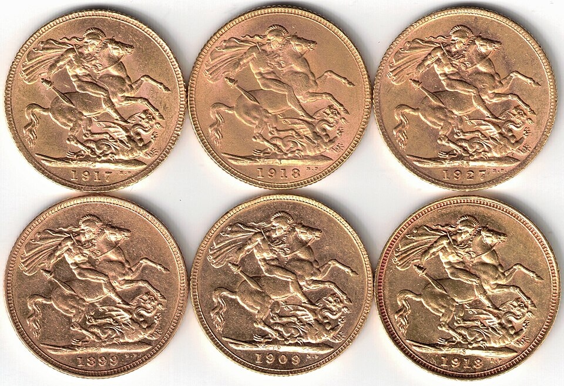

Personal learning repo · course index
teach-materials
Each course is a card — open it for its lessons.

Accounting Basics — reading company statements as an investor
- The Three Statements0001 中
- The Income Statement: From Revenue to Net Income0002 中
- The Balance Sheet: What It Owns, Owes, and Is Worth0003 中
- The Cash Flow Statement0004 中
- Accrual Accounting & Earnings Quality0005 中
- The Investor's Ratios0006 中
- Red Flags0007 中
- Capstone: Read a Real 10-K in One Hour0008 中

Apache Arrow — internals, mechanisms & APIs
- Buffers & Validity Bitmaps0001 中
- Offsets & Variable-Length Layout0002 中
- Zero-Copy Slicing & Buffer Lifetimes0003 中
- IPC, Feather & mmap0004 中
- The Compute Layer0005 中
- Dictionary Encoding0006 中
- Arrow Flight0007 中
- Builders & Memory Pools0008 中
- Reading libarrow Source0009 中
- Capstone: Build · Slice · Compute · IPC0010 中
ClickHouse — knowledge & use cases
- Why ClickHouse Is Fast0001 中
- MergeTree Anatomy: Parts & Granules0002 中
- ORDER BY Design, Partitioning & Skip Indexes0003 中
- Compression, Codecs & LowCardinality0004 中
- The MergeTree Family0005 中
- Mutations, Deletes & the Update Anti-Pattern0006 中
- Materialized Views & Incremental Aggregation0007 中
- Joins & Dictionaries0008 中
- The SQL Toolbox0009 中
- Use Cases & Capstone0010 中
Event-Driven Async Systems & RabbitMQ
Game Theory — Strategic Reasoning for Decisions & Markets
- Best Response & Nash Equilibrium0001 中
- Mixed Strategies & the Indifference Principle0002 中
- Sequential Games & Credible Threats0003 中
- Market Games: Cournot & Bertrand0004 中
- Auctions & Mechanism Design0005 中
- Repeated Games & Sustaining Cooperation0006 中
- Information: Signaling & Adverse Selection0007 中

Harness Engineering — building the scaffolding around LLMs
- Anatomy of a Harness0001 中
- Context Engineering0002 中
- Tool Design0003 中
- The Agent Loop0004 中
- Skills & Progressive Disclosure0005 中
- Permissions & Hooks0006 中
- Subagents & Delegation0007 中
- Evals & Iteration — Capstone0008 中
Linux Socket Programming — theory & practice
- A Socket Is a File Descriptor0001 中
- What TCP Actually Promises0002 中
- Addresses & getaddrinfo0003 中
- Framing & Short Reads0004 中
- Concurrent Servers: fork & threads0005 中
- select, poll, epoll0006 中
- UDP: Datagrams0007 中
- Non-blocking I/O0008 中
- Socket Options & Kernel Knobs0009 中
- Debugging & Capstone0010 中
LLM Security — attacking and defending AI agents
- The LLM Threat Landscape0001 中
- Direct Prompt Injection0002 中
- Indirect Injection0003 中
- Jailbreaks and Filter Evasion0004 中
- Agent Attack Surface0005 中
- Exfiltration Channels0006 中
- Evading Detection0007 中
- Token-Efficient Red Teaming0008 中
- The Defender's Stack0009 中
- The Capstone Playbook0010 中

Market Making Basics — build your own market-making trading bot
RL for Kaggle — reinforcement learning techniques for simulation competitions
- The Simulation Competition Landscape0001 中
- Framing the MDP0002 中
- Self-Play Infrastructure0003 中
- Reward Shaping0004 中
- Value-Based Methods: DQN0005 中
- Policy Gradient Methods: PPO0006 中
- The AlphaZero Recipe0007 中
- Imitation Bootstrap0008 中
- Evaluation and Leagues0009 中
- Capstone Pipeline0010 中
SCP Foundation — Reading the Lore
- The Object Class Lens0001 中
- Groups of Interest0002 中
- Anatomy of an SCP0003 中
- Navigating the Archive0004 中
- Canons & "There Is No Canon"0005 中

Valuation Basics — estimating what an asset is worth
- Price vs Value0001 中
- Time Value of Money0002 中
- The DCF Skeleton0003 中
- Estimating Cash Flows: FCFF & FCFE0004 中
- The Risk-Free Rate & the Equity Risk Premium0005 中
- Beta, Debt & WACC0006 中
- Growth, Reinvestment & ROIC0007 中
- Terminal Value0008 中
- Relative Valuation & Multiples0009 中
- Capstone: Value a Company0010 中